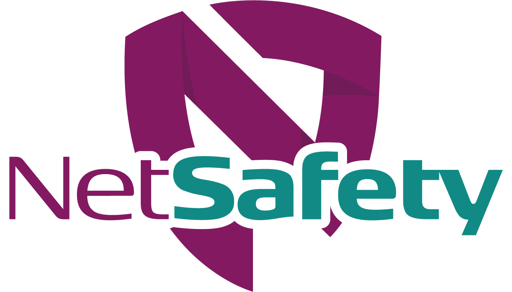

DEMO · reconstrução ilustrativa
dados fictícios
Análise de riscos, permissão e assinatura em lugares diferentesDifícil saber por que o trabalho foi liberado e em que estado ele está.
Quem usa: quem planeja, executa e administra a atividade de risco
1. A APR registra etapas, perigos, controles e nível de risco
2. A permissão nasce ligada à APR e é assinada por quem vai executar
3. O estado da permissão acompanha o trabalho até o PDF
Um caminho só, da análise ao registro final
Cadastros
APR
Permissão
Assinatura
Estado
PDF
Análise de riscosAPR num arquivo
?
Permissão de trabalhoemitida em outro
?
Assinaturas e documentosnum terceiro lugar
Cada peça existe, mas nada liga uma à outra.
Responsável técnico
Monta a APR, emite a permissão e autoriza início e fim.
APR · Permissão · Estado
Fornecedor
Contratada com CNPJ, equipe e documentos exigidos.
Cadastros
Trabalhador
Recebe o link, entra com o CPF e assina a permissão.
Assinatura
Administrador
Mantém perigos, controles, atividades e usuários.
Cadastros
ATIVIDADE DEMO
Manutenção em altura
Fornecedor DEMO
APR-DEMO-014
PT-DEMO-014.01
APR em elaboração
APR finalizada
Programada
Em andamento
Finalizada
APR-DEMO-014 · etapas e matriz de risco
EtapaPerigoControleNível
1. Montar andaimeQuedaEPI + EPCModerado
2. Soldar estruturaFaíscaProcedimentoSério
3. DesmontarQueda de objetoEPCBaixo
Probabilidade x gravidade → APR finalizada e assinada
PT-DEMO-014.01 · vinculada à APR-DEMO-014
TrabalhadoresAssinatura por link com CPF
Trabalhador AAguardandoAssinou
Trabalhador BAguardandoAssinou
Trabalhador CAguardandoAssinou
Documentos exigidos anexados
Aviso de início e de fim
Ciclo da permissão de trabalho
Programada
Em andamento
Finalizada
Autorizar início
Autorizar finalização
Canceladaalternativa a partir de Programada
PDF da APR e da PTregistro em A4 paisagem
Segurança
Perigos, controles e responsável técnico registrados antes de liberar o trabalho.
Rastreabilidade
Da análise à permissão, assinaturas e estado, em um único caminho.
Conformidade operacional
Documentos exigidos, avisos e PDF para o registro da atividade.
Netsafety · segurança facilitada